── Attaching core tidyverse packages ──────────────────────── tidyverse 2.0.0 ──
✔ dplyr 1.1.4 ✔ readr 2.1.5
✔ forcats 1.0.0 ✔ stringr 1.5.1
✔ ggplot2 3.5.1 ✔ tibble 3.2.1
✔ lubridate 1.9.4 ✔ tidyr 1.3.1
✔ purrr 1.0.4
── Conflicts ────────────────────────────────────────── tidyverse_conflicts() ──
✖ dplyr::filter() masks stats::filter()
✖ dplyr::lag() masks stats::lag()
ℹ Use the conflicted package (<http://conflicted.r-lib.org/>) to force all conflicts to become errors
“I have followed all rules for collaboration for this project, and I have not used generative AI on this project.”
#Simulation for Y(min)~Normal(mu = 10, SD = 2)
n <-5# sample sizemu <-10# population meansigma <-2# population standard deviation# generate a random sample of n observations from a normal populationsingle_sample <-rnorm(n, mu, sigma) |>round(2)# look at the samplesingle_sample
[1] 9.67 13.74 8.57 9.32 12.34
# compute the sample meansample_min <-min(single_sample)# look at the sample meansample_min
[1] 8.57
# generate a range of values that span the populationplot_df <-tibble(xvals =seq(mu -4* sigma, mu +4* sigma, length.out =500)) |>mutate(xvals_density =dnorm(xvals, mu, sigma))## plot the population model density curveggplot(data = plot_df, aes(x = xvals, y = xvals_density)) +geom_line() +theme_minimal() +## add the sample points from your samplegeom_jitter(data =tibble(single_sample), aes(x = single_sample, y =0),width =0, height =0.005) +## add a line for the sample meangeom_vline(xintercept = sample_min, colour ="red") +labs(x ="y", y ="density",title ="Normal with Mu = 10 and sigma = 2")
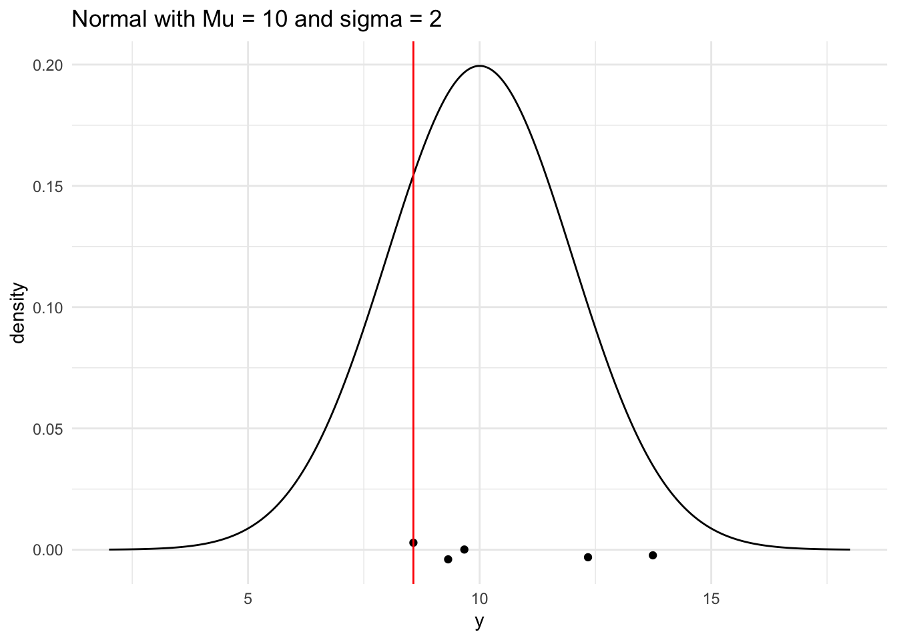
#Simulation for Y(max)~Normal(mu = 10, SD = 2)
sample_max <-max(single_sample)# look at the sample meansample_max
[1] 13.74
# generate a range of values that span the populationplot_df <-tibble(xvals =seq(mu -4* sigma, mu +4* sigma, length.out =500)) |>mutate(xvals_density =dnorm(xvals, mu, sigma))## plot the population model density curveggplot(data = plot_df, aes(x = xvals, y = xvals_density)) +geom_line() +theme_minimal() +## add the sample points from your samplegeom_jitter(data =tibble(single_sample), aes(x = single_sample, y =0),width =0, height =0.005) +## add a line for the sample meangeom_vline(xintercept = sample_max, colour ="red") +labs(x ="y", y ="density",title ="Normal with Mu = 10 and sigma = 2")
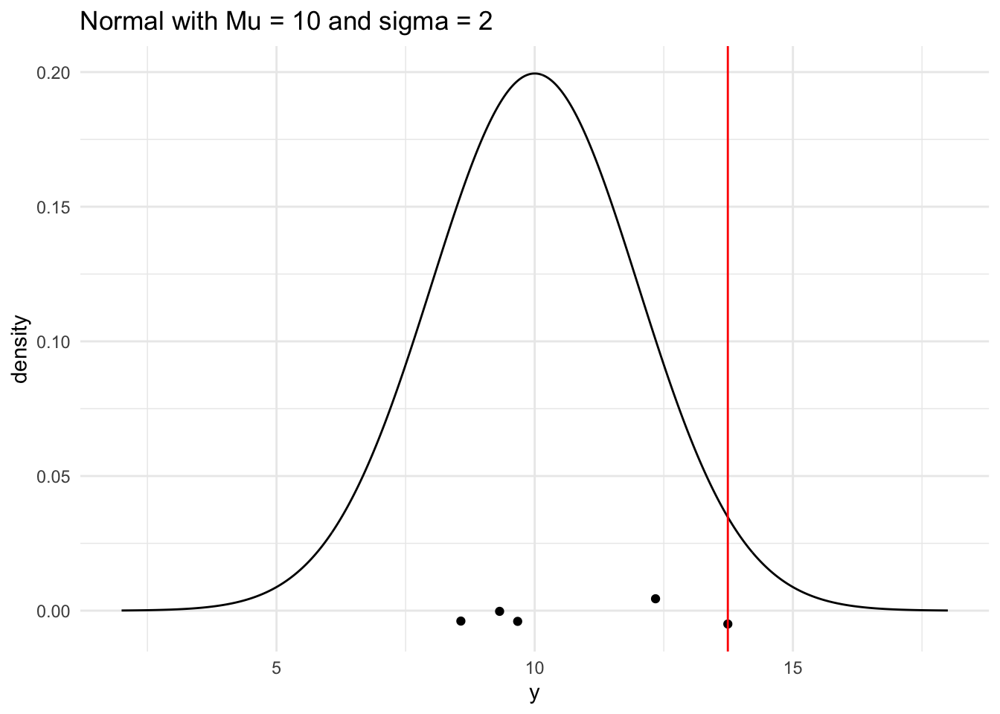
#Generating E(Ymin) & E(Ymax) for Normal Dist
generate_samp_min <-function(mu, sigma, n) { single_sample <-rnorm(n, mu, sigma) sample_min <-min(single_sample)return(sample_min)}## test function once:generate_samp_min(mu = mu, sigma = sigma, n = n)
[1] 7.0309
nsim <-5000# number of simulations## code to map through the function. ## the \(i) syntax says to just repeat the generate_samp_mean function## nsim timesmins <-map_dbl(1:nsim, \(i) generate_samp_min(mu = mu, sigma = sigma, n = n))## print some of the 5000 means## each number represents the sample mean from __one__ sample.mins_df <-tibble(mins)mins_df
## E(Ymax)generate_samp_max <-function(mu, sigma, n) { single_sample <-rnorm(n, mu, sigma) sample_max <-max(single_sample)return(sample_max)}## test function once:generate_samp_max(mu = mu, sigma = sigma, n = n)
[1] 13.62979
nsim <-5000# number of simulations## code to map through the function. ## the \(i) syntax says to just repeat the generate_samp_mean function## nsim timesmaxs <-map_dbl(1:nsim, \(i) generate_samp_max(mu = mu, sigma = sigma, n = n))## print some of the 5000 means## each number represents the sample mean from __one__ sample.maxs_df <-tibble(maxs)maxs_df
ggplot(data = mins_df, aes(x = mins)) +geom_histogram(colour ="darkolivegreen4", fill ="darkolivegreen1", bins =20) +theme_minimal() +labs(x ="Observed Sample Mins",title =paste("Sampling Distribution of the \nSample Mins when n =", n))
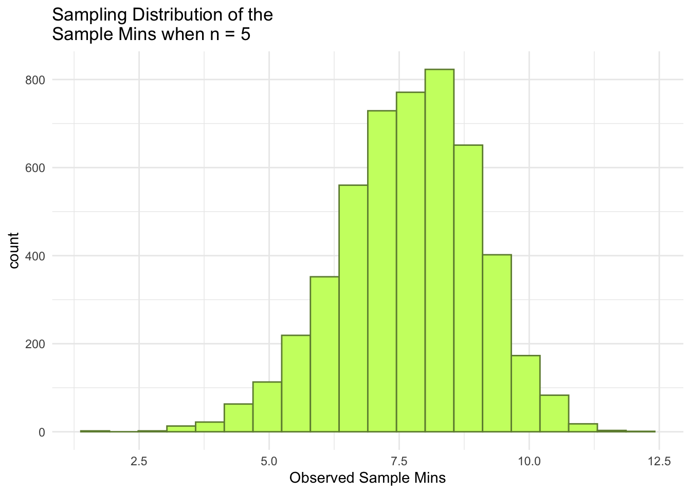
ggplot(data = maxs_df, aes(x = maxs)) +geom_histogram(colour ="purple", fill ="pink", bins =20) +theme_minimal() +labs(x ="Observed Sample Maxs",title =paste("Sampling Distribution of the \nSample Maxs when n =", n))
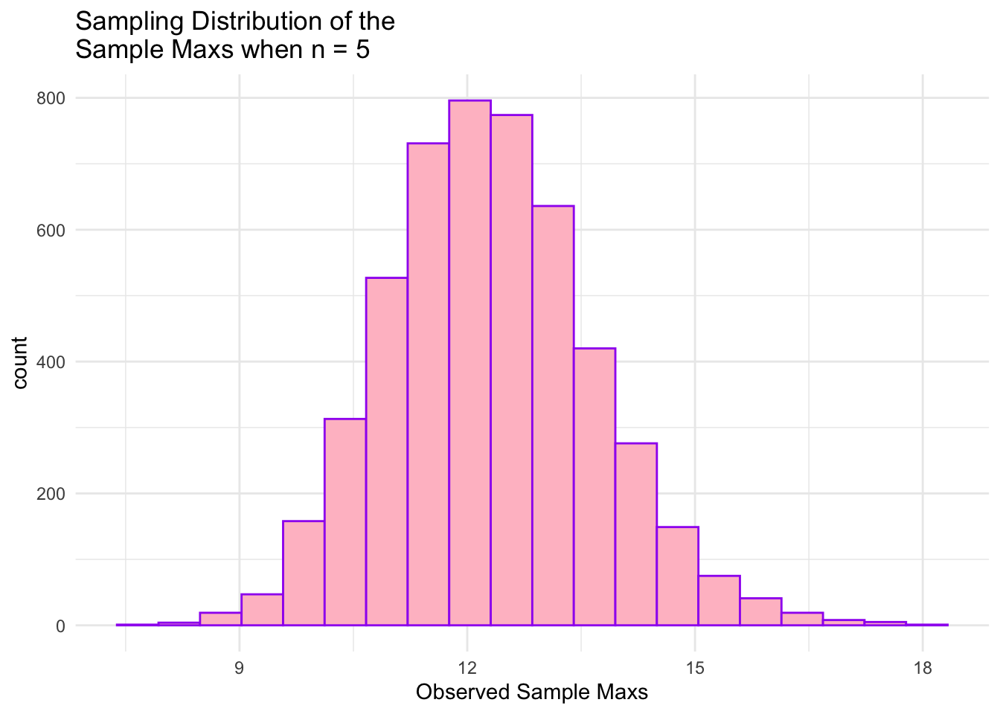
#Simulation for Y(min)~Unif(7, 13)
n <-5# sample sizetheta1 <-7# non-negative parameter 1theta2 <-13# non-negative parameter 2# generate a random sample of n observations from a Uniform populationsingle_sample1 <-runif(n, theta1, theta2) |>round(2)# look at the samplesingle_sample1
[1] 10.19 10.26 9.73 8.45 12.33
# compute the sample minsample_min1 <-min(single_sample1)# look at the sample minsample_min1
[1] 8.45
# generate a range of values that span the populationplot_df1 <-tibble(xvals1 =seq(theta1, theta2, length.out =500)) |>mutate(xvals_density1 =dunif(xvals1, theta1, theta2))## plot the population model density curveggplot(data = plot_df1, aes(x = xvals1, y = xvals_density1)) +geom_line() +theme_minimal() +## add the sample points from your samplegeom_jitter(data =tibble(single_sample1), aes(x = single_sample1, y =0),width =0, height =0.005) +## add a line for the sample mingeom_vline(xintercept = sample_min1, colour ="red") +labs(x ="y", y ="density",title ="Uniform with theta1 = 7 and theta2 = 13")
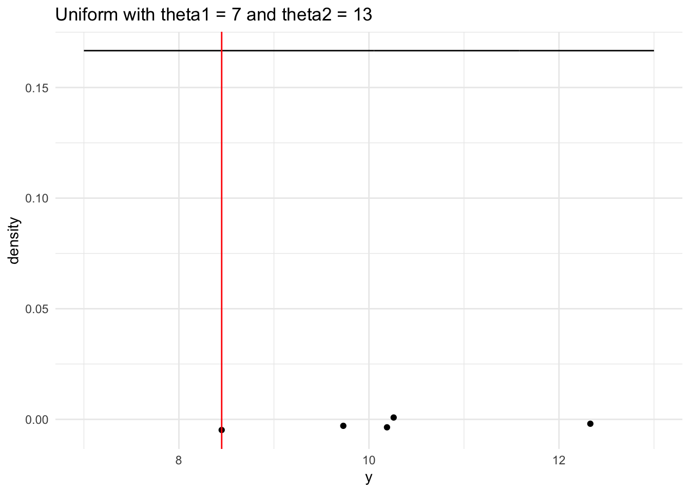
#Simulation for Y(max)~Unif(7, 13)
# compute the sample maxsample_max1 <-max(single_sample1)# look at the sample maxsample_max1
[1] 12.33
# generate a range of values that span the populationplot_df1 <-tibble(xvals1 =seq(theta1, theta2, length.out =500)) |>mutate(xvals_density1 =dunif(xvals1, theta1, theta2))## plot the population model density curveggplot(data = plot_df1, aes(x = xvals1, y = xvals_density1)) +geom_line() +theme_minimal() +## add the sample points from your samplegeom_jitter(data =tibble(single_sample1), aes(x = single_sample1, y =0),width =0, height =0.005) +## add a line for the sample maxgeom_vline(xintercept = sample_max1, colour ="red") +labs(x ="y", y ="density",title ="Uniform with theta1 = 7 and theta2 = 13")
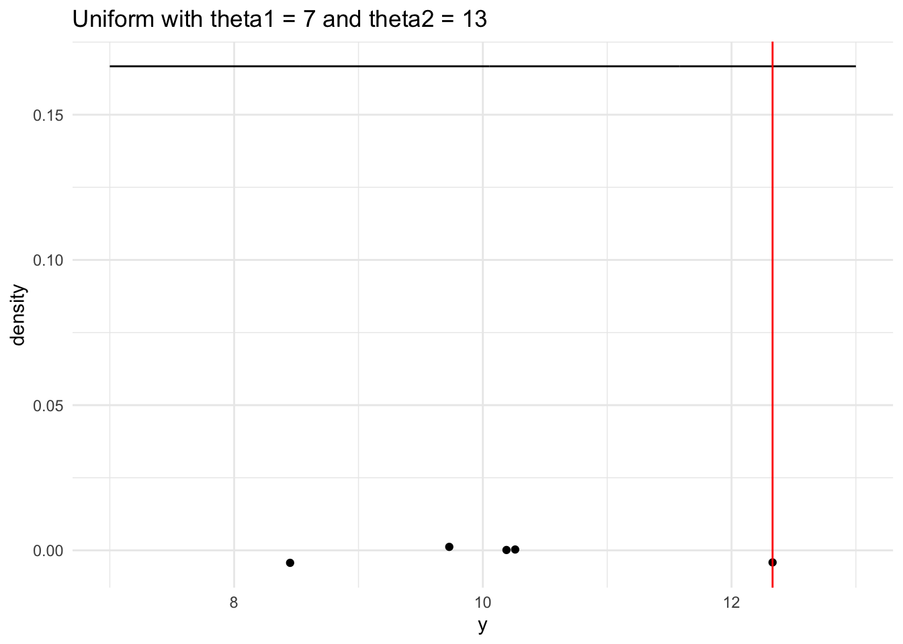
#Generating E(Ymin) & E(Ymax) for Uniform Distribution
generate_samp_min1 <-function(theta1, theta2, n) { single_sample1 <-runif(n, theta1, theta2) sample_min1 <-min(single_sample1)return(sample_min1)}## test function once:generate_samp_min1(theta1 = theta1, theta2 = theta2, n = n)
[1] 7.665332
nsim <-5000# number of simulations## code to map through the function. ## the \(i) syntax says to just repeat the generate_samp_mean function## nsim timesmins1 <-map_dbl(1:nsim, \(i) generate_samp_min1(theta1 = theta1, theta2 = theta2, n = n))## print some of the 5000 means## each number represents the sample mean from __one__ sample.mins_df1 <-tibble(mins1)mins_df1
## E(Ymax)generate_samp_max1 <-function(theta1, theta2, n) { single_sample1 <-runif(n, theta1, theta2) sample_max1 <-max(single_sample1)return(sample_max1)}## test function once:generate_samp_max1(theta1 = theta1, theta2 = theta2, n = n)
[1] 12.56424
nsim <-5000# number of simulations## code to map through the function. ## the \(i) syntax says to just repeat the generate_samp_mean function## nsim timesmaxs1 <-map_dbl(1:nsim, \(i) generate_samp_max1(theta1 = theta1, theta2 = theta2, n = n))## print some of the 5000 means## each number represents the sample mean from __one__ sample.maxs_df1 <-tibble(maxs1)maxs_df1
ggplot(data = mins_df1, aes(x = mins1)) +geom_histogram(colour ="darkolivegreen4", fill ="darkolivegreen1", bins =20) +theme_minimal() +labs(x ="Observed Sample Mins",title =paste("Sampling Distribution of the \nSample Mins when n =", n))
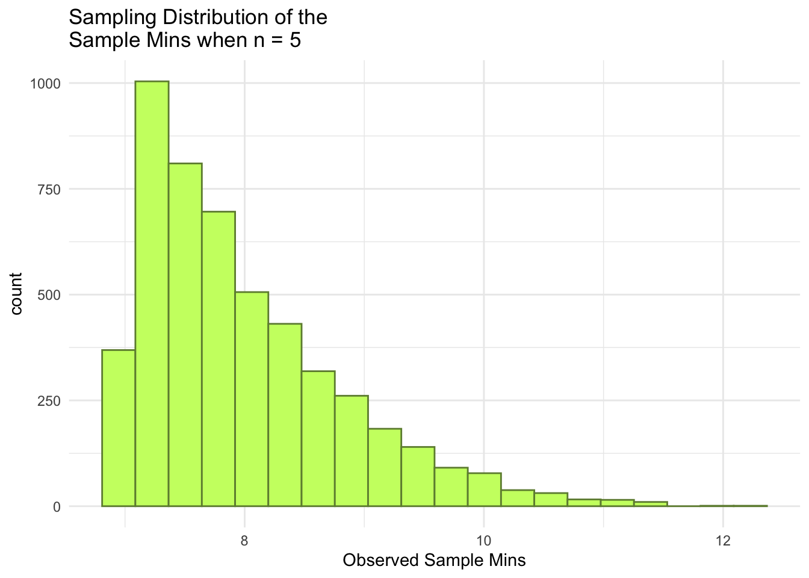
ggplot(data = maxs_df1, aes(x = maxs1)) +geom_histogram(colour ="purple", fill ="pink", bins =20) +theme_minimal() +labs(x ="Observed Sample Maxs",title =paste("Sampling Distribution of the \nSample Maxs when n =", n))
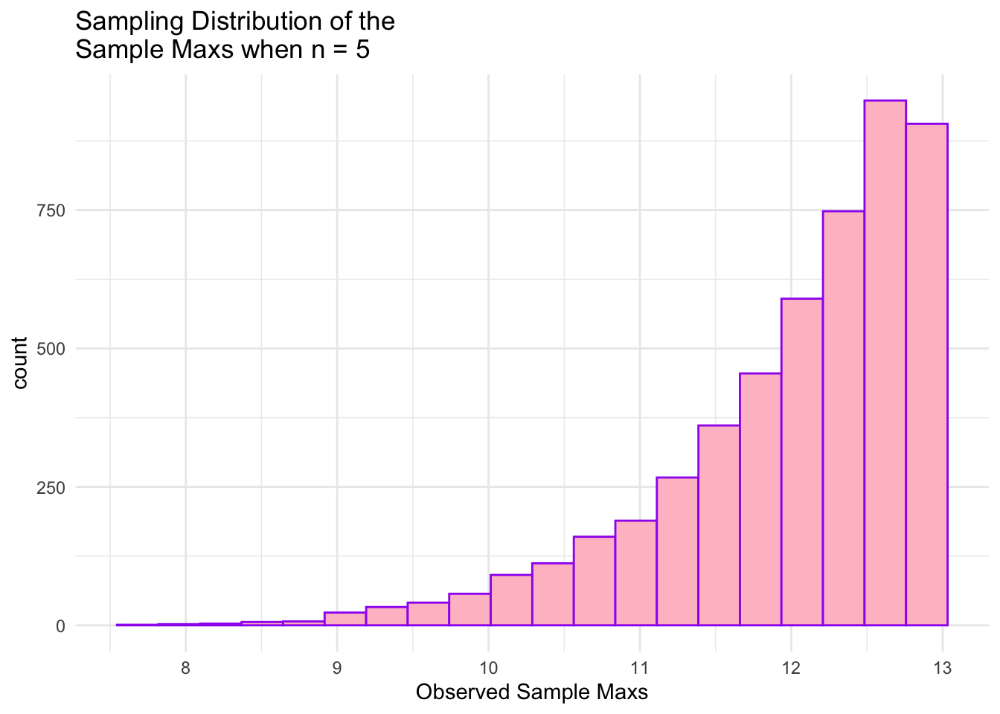
#Simulation for Y(min)~Exp(lambda = 0.5)
n <-5# sample sizelambda <-0.5mu <-1/ lambda # population meansigma <-sqrt(1/ lambda ^2) # population standard deviation# generate a random sample of n observations from a normal populationsingle_sample2 <-rexp(n, lambda) |>round(2)# look at the samplesingle_sample2
[1] 0.47 6.05 0.98 0.36 1.04
# compute the sample minsample_min2 <-min(single_sample2)# look at the sample minsample_min2
[1] 0.36
# generate a range of values that span the populationplot_df2 <-tibble(xvals2 =seq(0, mu +4* sigma, length.out =500)) |>mutate(xvals_density =dexp(xvals2, lambda))## plot the population model density curveggplot(data = plot_df2, aes(x = xvals2, y = xvals_density)) +geom_line() +theme_minimal() +## add the sample points from your samplegeom_jitter(data =tibble(single_sample2), aes(x = single_sample2, y =0),width =0, height =0.005) +## add a line for the sample mingeom_vline(xintercept = sample_min2, colour ="red") +labs(x ="y", y ="density",title ="Exponential with Lambda = 0.5")
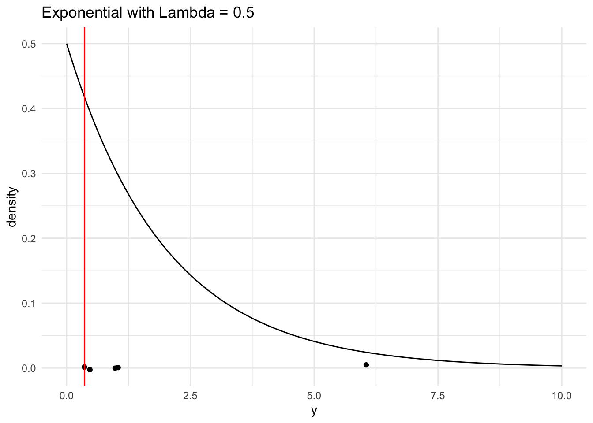
#Simulation for Y(max)~Exp(lambda = 0.5)
# compute the sample maxsample_max2 <-max(single_sample2)# look at the sample maxsample_max2
[1] 6.05
# generate a range of values that span the populationplot_df2 <-tibble(xvals2 =seq(0, mu +4* sigma, length.out =500)) |>mutate(xvals_density =dexp(xvals2, lambda))## plot the population model density curveggplot(data = plot_df2, aes(x = xvals2, y = xvals_density)) +geom_line() +theme_minimal() +## add the sample points from your samplegeom_jitter(data =tibble(single_sample2), aes(x = single_sample2, y =0),width =0, height =0.005) +## add a line for the sample maxgeom_vline(xintercept = sample_max2, colour ="red") +labs(x ="y", y ="density",title ="Exponential with Lambda = 0.5")
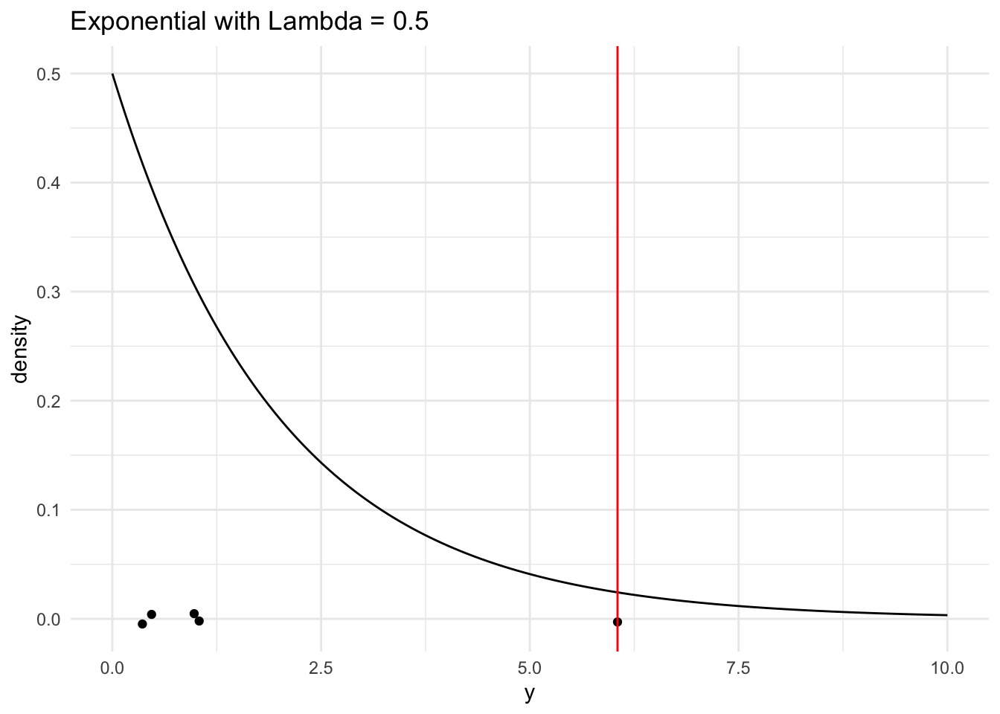
#Generating E(Ymin) & E(Ymax) for Exponential Distribution
generate_exp_min2 <-function(lambda, n) { single_sample2 <-rexp(n, lambda) sample_min2 <-min(single_sample2)return(sample_min2)}## test function once:generate_exp_min2(lambda = lambda, n = n)
[1] 0.1351427
#> [1] 3.915946nsim <-5000# number of simulationsmins2 <-map_dbl(1:nsim, \(i) generate_exp_min2(lambda = lambda, n = n))## print some of the 5000 means## each number represents the sample mean from __one__ sample.mins_df2 <-tibble(mins2)mins_df2
## E(Ymax)generate_exp_max2 <-function(lambda, n) { single_sample2 <-rexp(n, lambda) sample_max2 <-max(single_sample2)return(sample_max2)}## test function once:generate_exp_max2(lambda = lambda, n = n)
[1] 3.455534
#> [1] 3.915946nsim <-5000# number of simulationsmaxs2 <-map_dbl(1:nsim, \(i) generate_exp_max2(lambda = lambda, n = n))## print some of the 5000 means## each number represents the sample mean from __one__ sample.maxs_df2 <-tibble(maxs2)maxs_df2
ggplot(data = mins_df2, aes(x = mins2)) +geom_histogram(colour ="darkolivegreen4", fill ="darkolivegreen1", bins =20) +theme_minimal() +labs(x ="Observed Sample Mins",title =paste("Sampling Distribution of the \nSample Mins when n =", n))
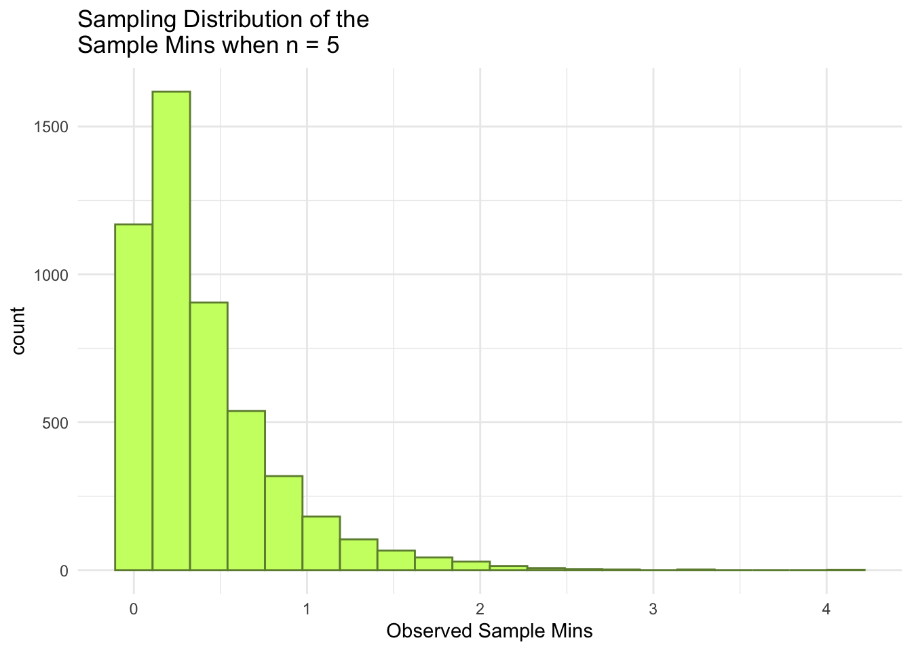
ggplot(data = maxs_df2, aes(x = maxs2)) +geom_histogram(colour ="purple", fill ="pink", bins =20) +theme_minimal() +labs(x ="Observed Sample Maxs",title =paste("Sampling Distribution of the \nSample Maxs when n =", n))
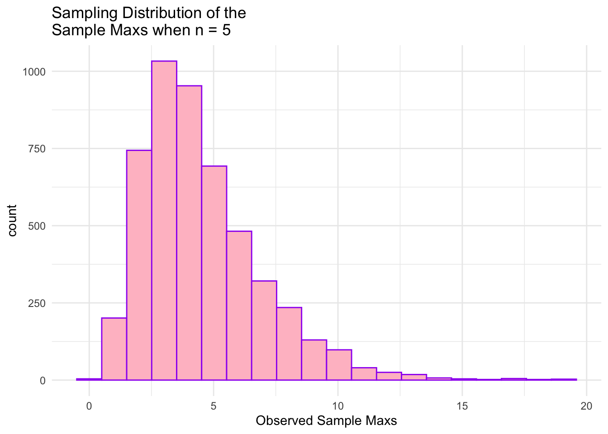
#Simulation for Y(min)~Beta(alpha = 8, beta = 2)
n <-5# sample sizealpha <-8beta <-2# generate a random sample of n observations from a normal populationsingle_sample3 <-rbeta(n, alpha, beta) |>round(2)# look at the samplesingle_sample3
[1] 0.71 0.93 0.77 0.82 0.82
# compute the sample meansample_min3 <-min(single_sample3)# look at the sample meansample_min3
[1] 0.71
#Simulation for Y(max)~Beta(alpha = 8, beta = 2)
# compute the sample meansample_max3 <-max(single_sample3)# look at the sample meansample_max3
[1] 0.93
#Generating E(Ymin) & E(Ymax) for Beta Distribution
generate_sample_min3 <-function(alpha, beta, n) { single_sample3 <-rbeta(n, alpha, beta) sample_min3 <-min(single_sample3)return(sample_min3)}## test function once:generate_sample_min3(alpha = alpha, beta = beta, n = n)
[1] 0.5883812
#> [1] 3.915946nsim <-5000# number of simulationsmins3 <-map_dbl(1:nsim, \(i) generate_sample_min3(alpha = alpha, beta = beta, n = n))## print some of the 5000 means## each number represents the sample mean from __one__ sample.mins_df3 <-tibble(mins3)mins_df3
## E(Ymax)generate_sample_max3 <-function(alpha, beta, n) { single_sample3 <-rbeta(n, alpha, beta) sample_max3 <-max(single_sample3)return(sample_max3)}## test function once:generate_sample_max3(alpha = alpha, beta = beta, n = n)
[1] 0.9220206
#> [1] 3.915946nsim <-5000# number of simulationsmaxs3 <-map_dbl(1:nsim, \(i) generate_sample_max3(alpha = alpha, beta = beta, n = n))## print some of the 5000 means## each number represents the sample mean from __one__ sample.maxs_df3 <-tibble(maxs3)maxs_df3
ggplot(data = mins_df3, aes(x = mins3)) +geom_histogram(colour ="darkolivegreen4", fill ="darkolivegreen1", bins =20) +theme_minimal() +labs(x ="Observed Sample Mins",title =paste("Sampling Distribution of the \nSample Mins when n =", n))
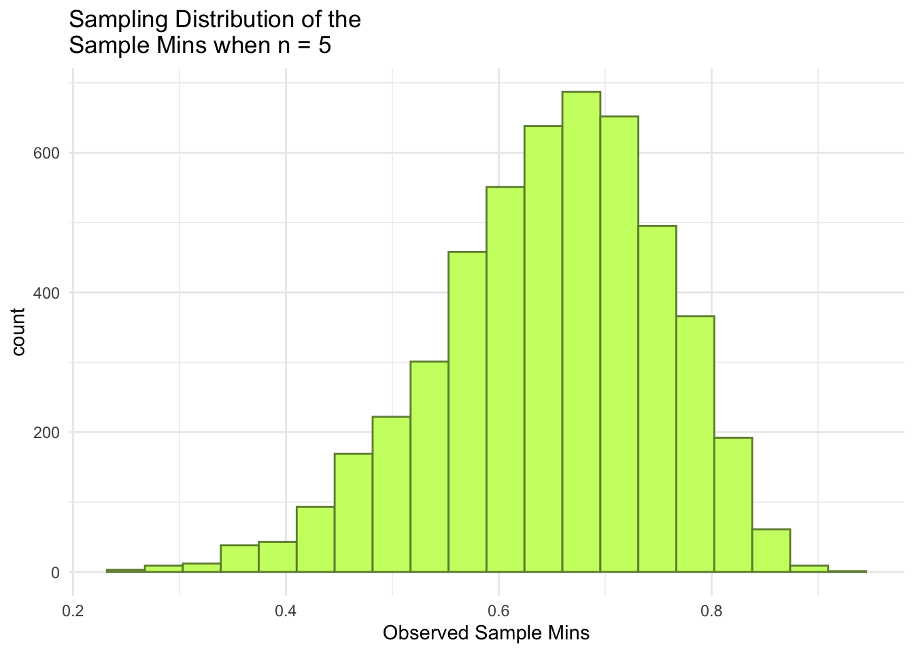
ggplot(data = maxs_df3, aes(x = maxs3)) +geom_histogram(colour ="purple", fill ="pink", bins =20) +theme_minimal() +labs(x ="Observed Sample Maxs",title =paste("Sampling Distribution of the \nSample Maxs when n =", n))
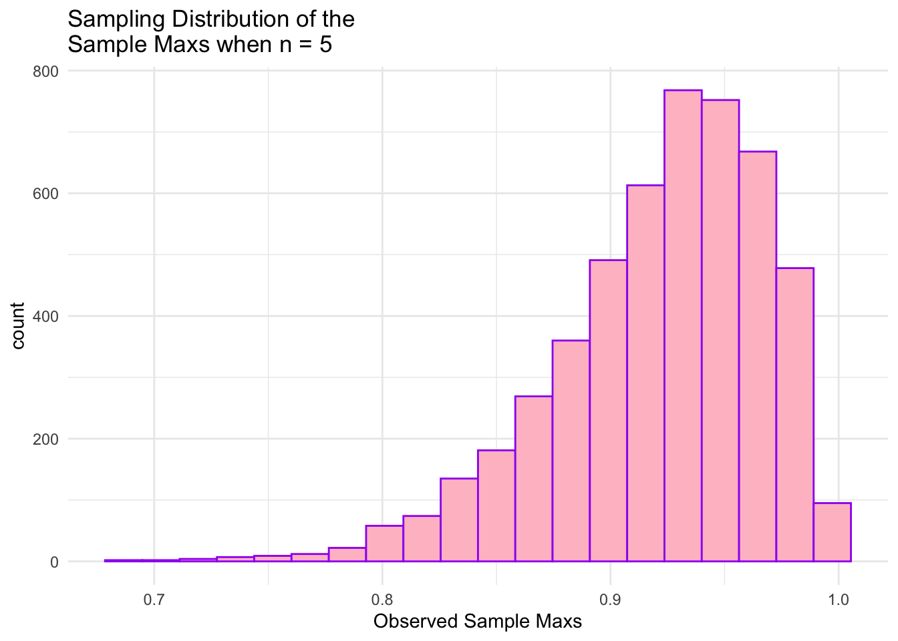
library(tidyverse)## create population graphsnorm_df <-tibble(x =seq(3, 17, length.out =1000),dens =dnorm(x, mean =10, sd =2),pop ="normal(10, 4)")unif_df <-tibble(x =seq(7, 13, length.out =1000),dens =dunif(x, 7, 13),pop ="uniform(7, 13)")exp_df <-tibble(x =seq(0, 10, length.out =1000),dens =dexp(x, 0.5),pop ="exp(0.5)")beta_df <-tibble(x =seq(0, 1, length.out =1000),dens =dbeta(x, 8, 2),pop ="beta(8, 2)")pop_plot <-bind_rows(norm_df, unif_df, exp_df, beta_df) |>mutate(pop =fct_relevel(pop, c("normal(10, 4)", "uniform(7, 13)","exp(0.5)", "beta(8, 2)")))ggplot(data = pop_plot, aes(x = x, y = dens)) +geom_line() +theme_minimal() +facet_wrap(~ pop, nrow =1, scales ="free") +geom_vline( #geom_vline() to create vertical line for minimumdata =filter(pop_plot, pop =="normal(10, 4)"), #filter through pop_plot for normal dist ONLYaes(xintercept = sample_min),color ="red" ) +geom_vline(data =filter(pop_plot, pop =="uniform(7, 13)"),aes(xintercept = sample_min1),color ="red" ) +geom_vline(data =filter(pop_plot, pop =="exp(0.5)"),aes(xintercept = sample_min2),color ="red" ) +geom_vline(data =filter(pop_plot, pop =="beta(8, 2)"), #filter through pop_plot for beta dist ONLYaes(xintercept = sample_min3),color ="red" ) +labs(title ="Population Distributions for Each Simulation Setting")
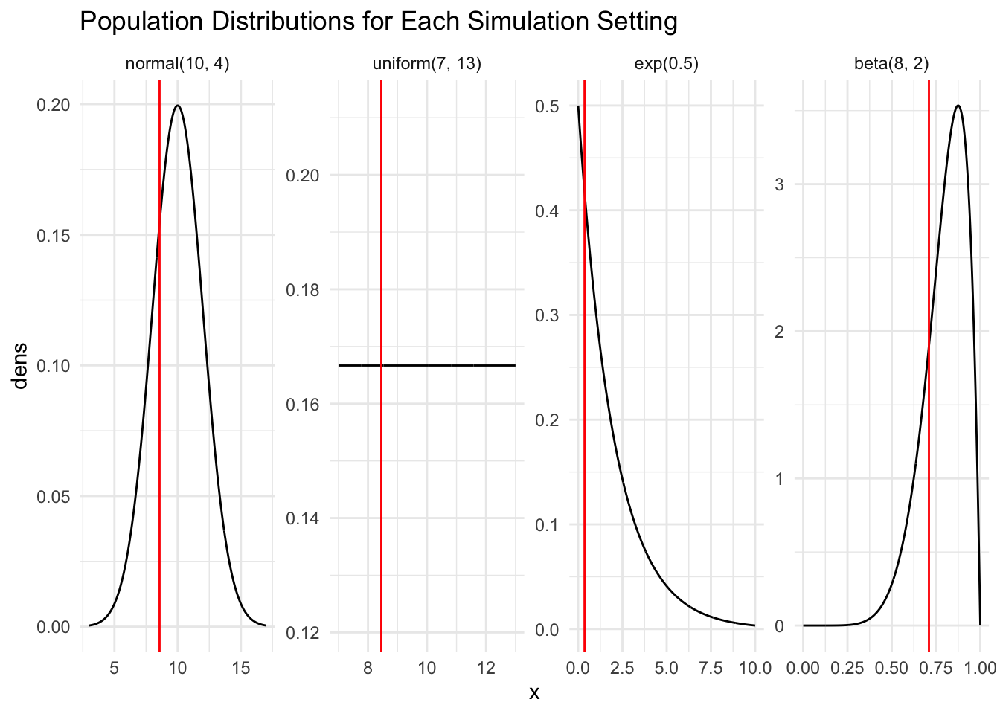
pop_plot <-bind_rows(norm_df, unif_df, exp_df, beta_df) |>mutate(pop =fct_relevel(pop, c("normal(10, 4)", "uniform(7, 13)","exp(0.5)", "beta(8, 2)")))ggplot(data = pop_plot, aes(x = x, y = dens)) +geom_line() +theme_minimal() +facet_wrap(~ pop, nrow =1, scales ="free") +geom_vline( #geom_vline() to create vertical line for maximum nowdata =filter(pop_plot, pop =="normal(10, 4)"), #filter through pop_plot for normal dist ONLYaes(xintercept = sample_max),color ="red" ) +geom_vline(data =filter(pop_plot, pop =="uniform(7, 13)"),aes(xintercept = sample_max1),color ="red" ) +geom_vline(data =filter(pop_plot, pop =="exp(0.5)"),aes(xintercept = sample_max2),color ="red" ) +geom_vline(data =filter(pop_plot, pop =="beta(8, 2)"), #filter through pop_plot for beta dist ONLYaes(xintercept = sample_max3),color ="red" ) +labs(title ="Population Distributions for Each Simulation Setting")
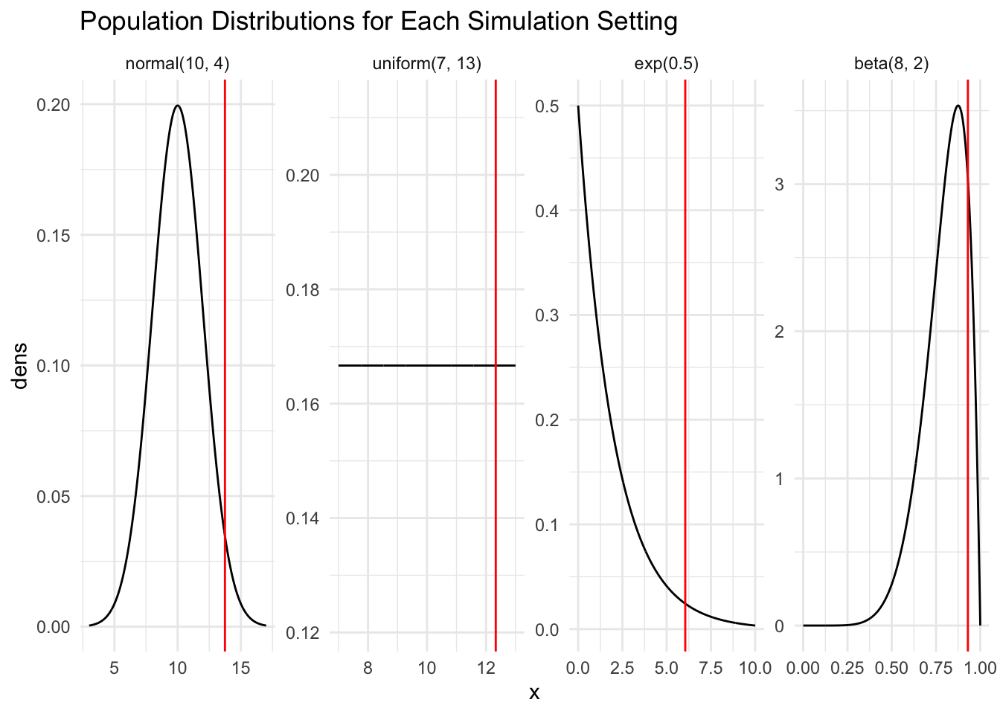
Table of Results
\(\text{N}(\mu = 10, \sigma^2 = 4)\)
\(\text{Unif}(\theta_1 = 7, \theta_2 = 13)\)
\(\text{Exp}(\lambda = 0.5)\)
\(\text{Beta}(\alpha = 8, \beta = 2)\)
\(\text{E}(Y_{min})\)
7.669958
7.991146
0.4051406
0.6482102
\(\text{E}(Y_{max})\)
12.33767
12.00729
4.538364
0.9214295
\(\text{SE}(Y_{min})\)
1.333249
0.8342634
0.4029039
0.1051907
\(\text{SE}(Y_{max})\)
1.337612
0.8492786
2.416008
0.04662133
Briefly summarise how SE(Ymin) and SE(Ymax) compare for each of the above population models. Can you propose a general rule or result for how SE(Ymin) and SE(Ymax) compare for a given population?
SE(Ymin) and SE(Ymax) in the Normal Distribution are the same and SE(Ymin) and SE(Ymax) for the Uniform Distribution are also the same. The standard errors are roughly symmetrical and this makes sense because the density plots of these two distributions for minimum and maximum behave symmetrical as well. For the Exponential and Beta Distributions, SE(Ymin) and SE(Ymax) are not the same or similar. It seems that in these distributions, because they are skewed both to the right and this causes more variability in standard error of the distributions. A general rule for how SE(Ymin) and SE(Ymax) compare for a given population might be if the population density is symmetrical, the Standard Errors of the maximum and minimum will be very close if not the same, and for skewed or asymmetrical population density, the maximum and minimum will have more variability causing the standard errors to most likely not match up.
Choose either the third (Exponential) or fourth (Beta) population model from the table above. For that population model, find the pdf of Ymin and Ymax, and, for each of those random variables, sketch the pdfs and use integration to calculate the expected value and standard error. What do you notice about how your answers compare to the simulated answers? Some code is given below to help you plot the pdfs in R:
The answers I got from my hand calculations match up with the simulation calculations for E(Ymin) and E(Ymax) as well as the standard errors!
n <-5## CHANGE 0 and 3 to represent where you want your graph to start and end## on the x-axisx <-seq(0, 3, length.out =1000)## CHANGE to be the pdf you calculated. Note that, as of now, ## this is not a proper density (it does not integrate to 1).density <- n * (-exp(-(0.5) * x))^4*0.5*exp(-0.5*x)## put into tibble and plotsamp_min_df <-tibble(x, density)ggplot(data = samp_min_df, aes(x = x, y = density)) +geom_line() +theme_minimal()
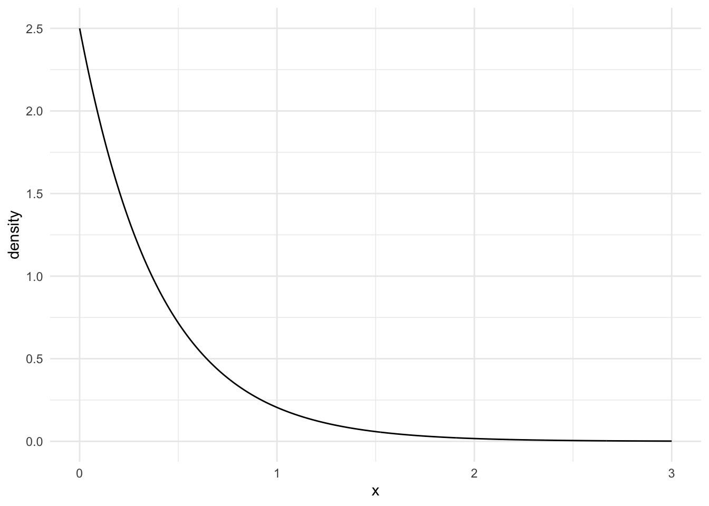
n <-5## CHANGE 0 and 3 to represent where you want your graph to start and end## on the x-axisx1 <-seq(0, 3, length.out =1000)## CHANGE to be the pdf you calculated. Note that, as of now, ## this is not a proper density (it does not integrate to 1).density1 <- n * (1-exp(-0.5* x1))^4*0.5*exp(-0.5*x1)## put into tibble and plotsamp_max_df <-tibble(x, density1)ggplot(data = samp_max_df, aes(x = x, y = density1)) +geom_line() +theme_minimal()